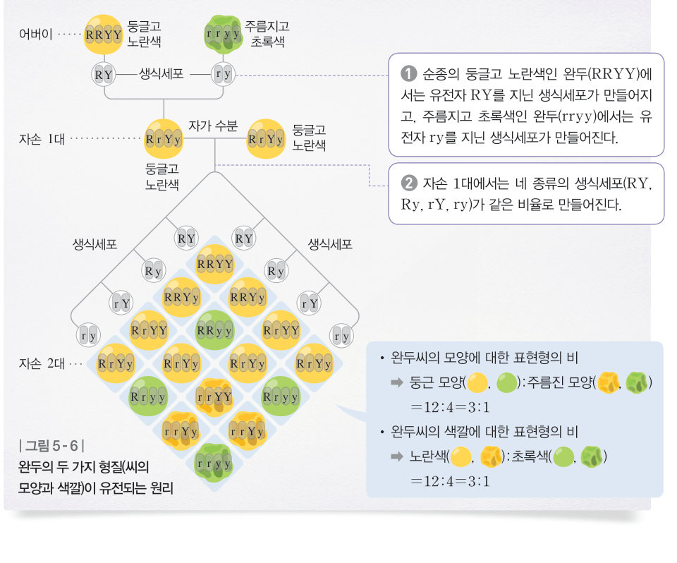
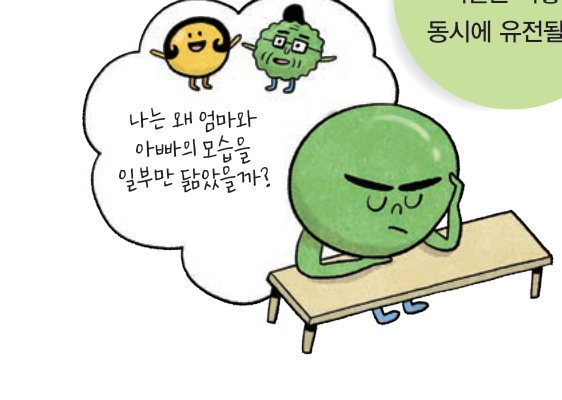

완두씨의 모양과 색깔은 어떻게 동시에 유전될까? 16 칸 퍼넷 사각형을 직접 채우며 9:3:3:1의 비를 찾고, 모양과 색깔을 따로 보면 각각 3:1로 독립적으로 유전된다는 것을 확인해 보자.
씨의 모양이 둥글고 색깔이 노란색인 순종 완두(RRYY)와 주름지고 초록색인 순종 완두(rryy)를 교배한 결과 자손 1대에서는 씨가 둥글고 노란색인 완두(RrYy)만 나왔다. 이 자손 1대를 자가 수분한 결과 자손 2대에서는 둥글고 노란색, 둥글고 초록색, 주름지고 노란색, 주름지고 초록색인 완두가 약 9:3:3:1의 비로 나타났다.
자손 2대에서 둥근 완두와 주름진 완두는 3:1, 노란색 완두와 초록색 완두도 3:1의 비로 나타났다. 따라서 완두씨의 모양과 색깔에 대한 대립유전자 쌍은 서로 영향을 미치지 않았으며, 각각 분리되어 서로 다른 생식세포로 들어간다. 이와 같이 두 쌍 이상의 대립유전자가 서로 영향을 미치지 않고 각각 분리의 법칙에 따라 유전되는 원리를 독립의 법칙이라고 한다.
멘델의 유전 실험은 형질이 물감처럼 뒤섞여서 유전되지 않음을 증명하고, 유전자를 바탕으로 유전 원리를 설명한 것에 의의가 있다. 오늘날 멘델의 유전 원리는 사람을 비롯한 많은 생물의 유전 현상을 연구하는 기본 원리로서 여전히 중요하다.
| ⑴ 하나의 형질에서 구분되는 변이를 대립 형질이라고 한다. | |
| ⑵ 2 가지 형질이 유전될 때 각 형질의 대립유전자는 분리의 법칙을 따르지 않는다. | |
| ⑶ 노란색이 우성일 때 노란색 순종과 초록색 순종을 교배하면 자손 1대에서 초록색 완두만 나타난다. |
| 평가 기준 | 스스로 평가 |
|---|---|
| 독립의 법칙을 설명할 수 있다. | |
| 멘델의 유전 실험이 지닌 의의를 설명할 수 있다. |